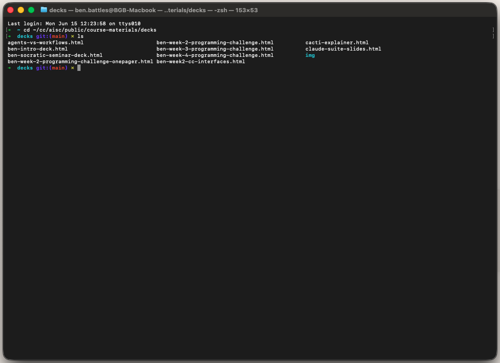
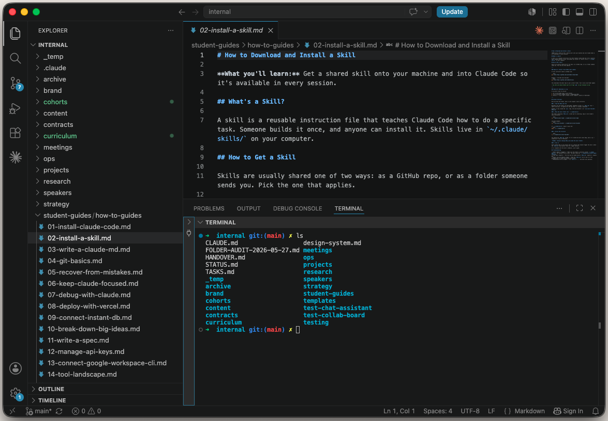
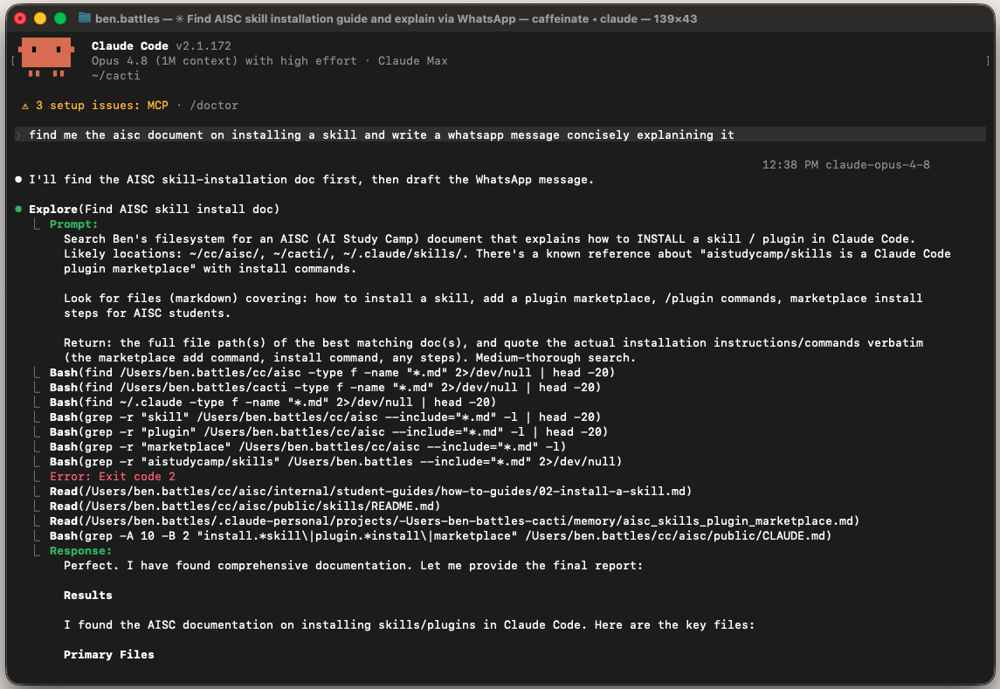
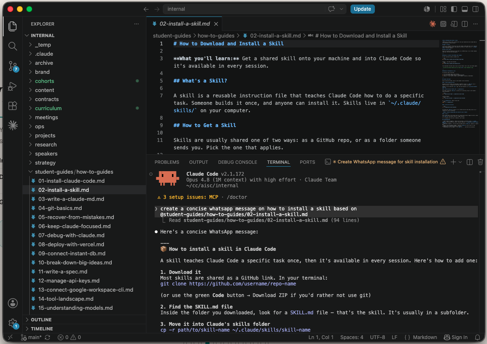
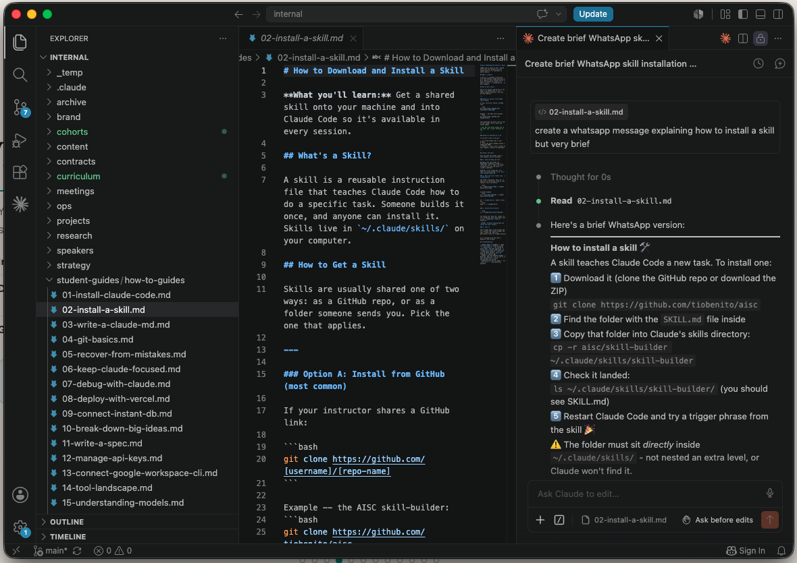
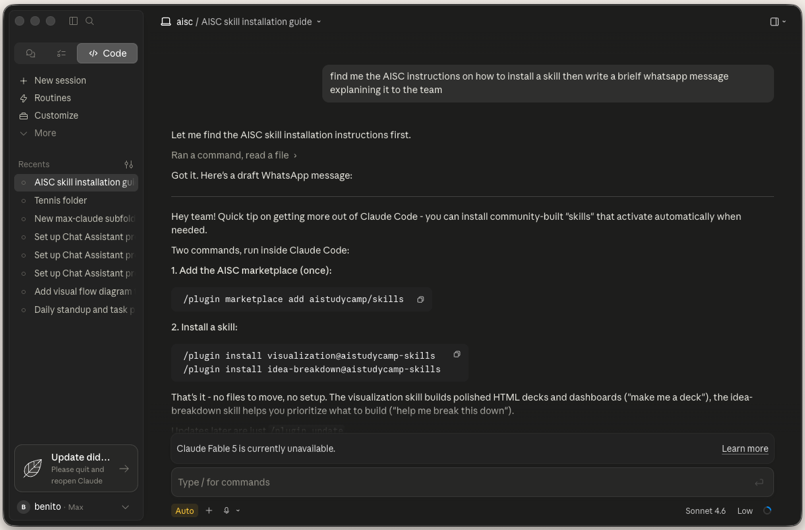

Every way to
talk to Claude.
It's all Claude.
The abstraction layers.
Less friction at every step. We teach the terminal layer, most powerful and most portable.
Same terminal either way.
Why not the desktop app?
Desktop apps
The terminal
The terminal.
It's how you install and run everything, before any AI wrapper exists.

VS Code: a terminal with context.
Same terminal you know, plus file tree, git, and editor in one window. You see everything Claude touches, live.

Claude Code in the terminal.
Type claude in the VS Code terminal. Full power, nothing stripped out.


The VS Code extension.
Same Claude Code, no terminal visible. A sidebar panel inside VS Code. Also works in Cursor.

Claude Desktop.

Why we teach it this way.
We had to pick one. VS Code + Claude Code terminal is the most widely used dev setup. Not the only answer. Our answer.
The config is portable. CLAUDE.md, MCP servers, skills, and hooks work across every interface.
The terminal is the floor. Every coding agent lives there. Learn it once, and Codex, Gemini, and whatever comes next already work the same way.
Moving around a terminal.
A terminal always sits inside one folder. Four commands are the whole skill.
$ pwd
/Users/maria/Desktop
# what's here
$ ls
notes.txt old-project
# step into a folder
$ cd old-project
$ pwd
/Users/maria/Desktop/old-project
# step back out
$ cd ..
Landing in your home base.
Same folder you built in Week 1. You're just walking in the terminal door now instead of the app.
Every terminal opens wherever your shell happens to start, not your project folder. Fixed by adding one function to a shell config.
claude() {
cd ~/maria-home
command claude "$@"
}
Set up a shortcut so `claude` always starts
in my home folder from Week 1, no matter
where I am. Add it to my shell config,
and test it.
Same idea, different brain.
They're all harnesses. Type in the terminal, it reads and edits your code. Same pattern, just a different model inside.